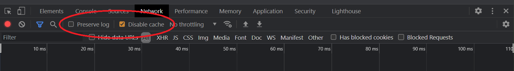

Developer Console
Good idea to keep open when developing web applications.
Element
Lets us inspect the DOM's structure and element styling.
Console
This is the JavaScript console which can be used for simple debugging
and displaying application state.
Network
Network tab lets us see communication between client and server.
- Ensure "Disable cache" option is checked.
- Also a good idea to check "Preserve logs" to prevent logs being cleared after a refresh.

Google Chrome developer console - network tab
HTTP
Hyper Text Transfer Protocol - this is the protocol that browsers and servers
use to communicate.
HTTP Request
The following methods can be used when making requests to a server.
- GET - Request data without sending data.
- POST - Submit an entity to a resource, usually causing a state change on the server.
- PUT - Whole update of a resource with request payload.
- PATCH - Partial update of a resource.
- DELETE - Deletion of a resource.
HTTP Response
Depending on the result of a request, a status code will be sent back
with the response. Several common status codes are detailed below.
200 Status Codes
- 200 OK - Request succeeded.
- 201 Created
- Request succeeded and new resource created. Usually sent after
POST (and sometimes PUT) requests.
300 Status Codes
- 301 Moved Permanently
- URL of the requested resource has been permanently changed with
the new URL provided in the response.
400 Status Codes
- 400 Bad Request - Server could not understand the request due to invalid syntax.
- 401 Unauthorized - Client is inauthenticated.
- 403 Forbidden
- Client does not have access to requested resource because they are
unauthorized. Unlike 401, the client is known to the server.
- 404 Not Found - Server cannot find requested resource.
- 405 Method Not Allowed
- Request method is known by the server, but is not allowed.
500 Status Codes
- 500 Internal Server Error
- Server encountered a situation it does not know how to handle.
- 502 Bad Gateway
- Server got an invalid response while working as a gateway to respond to a request.
- 503 Service Unavailable
- Server is not ready to handle the request, possibly due to maintanence or overload.